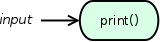
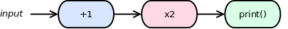
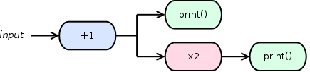

Hello world¶
Let’s start with a really simple workflow, a “hello world” of pipelines if you will.
It just prints each input element as it comes in. Feeding it a stream of numbers 0, 1, 2, 3 simply echoes the numbers to your terminal’s standard output. Here’s the code:
import mpipe
def echo(value):
print(value)
stage = mpipe.OrderedStage(echo)
pipe = mpipe.Pipeline(stage)
for val in (0, 1, 2, 3):
pipe.put(val)
pipe.put(None) # Stop the pipeline.
The program output is:
0
1
2
3
It’s a silly pipeline that doesn’t do much other than illustrate a few basic ideas. Note the last line that puts None on the pipeline – this sends the “stop” task, effectively signaling all processes within the pipeline to terminate.
Serializing stages¶
Multiple stages can be serially linked to create a sequential workflow:
from mpipe import OrderedStage, Pipeline
def increment(value):
return value + 1
def double(value):
return value * 2
def echo(value):
print(value)
stage1 = OrderedStage(increment)
stage2 = OrderedStage(double)
stage3 = OrderedStage(echo)
stage1.link(stage2)
stage2.link(stage3)
pipe = Pipeline(stage1)
for number in range(10):
pipe.put(number)
pipe.put(None)
Pipeline with output¶
Have you noticed that the pipelines so far did not actually produce results at the output end? Here’s a pipeline similar to the previous one, except that the final result is returned as pipeline output instead of being passed to a third stage:

Without a third stage doing the printing, the caller of the pipeline must print the final result:
from mpipe import OrderedStage, Pipeline
def increment(value):
return value + 1
def double(value):
return value * 2
stage1 = OrderedStage(increment)
stage2 = OrderedStage(double)
stage1.link(stage2)
pipe = Pipeline(stage1)
for number in range(10):
pipe.put(number)
pipe.put(None)
for result in pipe.results():
print(result)
Note that, before fetching results, we need to put the “stop” task on the pipeline. That’s because results() returns a generator function that continues to fetch results so long as the pipeline remains alive. Without previously signaling “stop”, the fetch loop would hang on the fifth iteration.
Another way to fetch results is to call get() exactly four times. Using this method it doesn’t matter whether you signal “stop” before or after the fetch loop:
for foobar in range(10):
print(pipe.get())
pipe.put(None)
Forked pipeline¶
Imagine a pipeline that forks into two separate flows of execution:
We can fork into more than two paths, but let’s keep it simple for now.
from mpipe import OrderedWorker, Stage, Pipeline
class Incrementor(OrderedWorker):
def doTask(self, value):
return value + 1
class Doubler(OrderedWorker):
def doTask(self, value):
return value * 2
class Printer(OrderedWorker):
def doTask(self, value):
print(value)
stage1 = Stage(Incrementor)
stage2 = Stage(Doubler)
stage3 = Stage(Printer)
stage4 = Stage(Printer)
stage1.link(stage2)
stage1.link(stage3)
stage2.link(stage4)
pipe = Pipeline(stage1)
for number in range(10):
pipe.put(number)
pipe.put(None)
This time instead of using standalone functions to implement the work, we used classes. It’s really the same thing, but with classes you have greater potential for encapsulation and code organization when implementing complex stages. Note that this requires a slightly different way of creating stage objects, now using the Stage class.